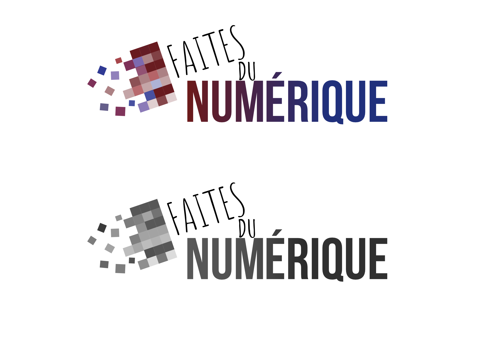

Création de logo - "Faites du Numérique"
(MMI)
Dans le cadre d'une SAE en MMI, nous devions produire des éléments d'une communication visuelle. La communication visuelle était pour un événement qui s'est déroulé à Plougrescant ( 22 ).
L'événement en question était “Faites du Numérique”. Pour mieux comprendre ce qu'il nous était demandé, …. est venue nous expliquer ce qu'ils attendaient.
Ensuite, par groupe, on s'est réuni pour mettre en commun toutes nos idées. On a réparti les différentes tâches ( flyers, affiche et logo ), et il m'a été attribué le logo.
A partir de ce moment-là, j'ai posé mes idées sur papier ( une dizaine de croquis réalisé ) et par la suite choisi parmi mes idées celle qui m'inspirait le plus. Cependant, au fur et à mesure du projet, mes idées ont évolué.
Je souhaitais un logo simple, DIY pour rappeler le “Faites”, et les pixels pour rappeler le côté numérique.
Création de logo - "Faites du Numérique"
Dans le cadre d'une SAE en MMI, nous devions produire des éléments d'une communication visuelle. La communication visuelle était pour un événement qui s'est déroulé à Plougrescant ( 22 ).
L'événement en question était “Faites du Numérique”. Pour mieux comprendre ce qu'il nous était demandé, …. est venue nous expliquer ce qu'ils attendaient.
Ensuite, par groupe, on s'est réuni pour mettre en commun toutes nos idées. On a réparti les différentes tâches ( flyers, affiche et logo ), et il m'a été attribué le logo.
A partir de ce moment-là, j'ai posé mes idées sur papier ( une dizaine de croquis réalisé ) et par la suite choisi parmi mes idées celle qui m'inspirait le plus. Cependant, au fur et à mesure du projet, mes idées ont évolué.
Je souhaitais un logo simple, DIY pour rappeler le “Faites”, et les pixels pour rappeler le côté numérique.
Création de logo - "Made In Street"
Ce projet part d’une initiative personnelle, je souhaitais améliorer mes compétences en graphisme en dehors de mes études alors j’ai posté sur mes réseaux sociaux une annonce de recherche de projet en tant que bénévole. J’ai eu quelques réponses dont celle d’une amie qui est responsable en événementiel du BDE “LASH” à l’Université Côte d'Azur.
Elle m’a contacté pour refaire un logo pour “Made in street” qui est un événement à Nice organisé par leur BDE.
Pour mon premier projet seule, j’ai géré l’entièreté de mon projet de la gestion de projet, jusqu’au rendu final ( 2 semaines au total ). J’ai commencé mon projet par une réunion virtuelle avec la responsable événementiel afin de comprendre les livrables, les objectifs, la deadline… A partir de cette réunion et de mes notes, j’ai fait un Gantt pour les dates de réunion pour valider les idées et avancer ensemble dans la bonne direction.
La première étape de ce projet à été le moodboard pour réunir mes idées.
Celui-ci une fois validé par l’équipe du pôle événementiel du BDE, m’a permis de commencer mes croquis papier, 4 grandes idées au départ et deux de ses idées ont été sélectionnées. J’ai donc continué les croquis et ensuite je suis passé sur les logiciels avec plusieurs essais en changeant les polices, les couleurs, en bougeant les éléments pour avoir le meilleur rendu possible. Par la suite l’équipe à su départager les deux et mon idée à été validé par la présidence.